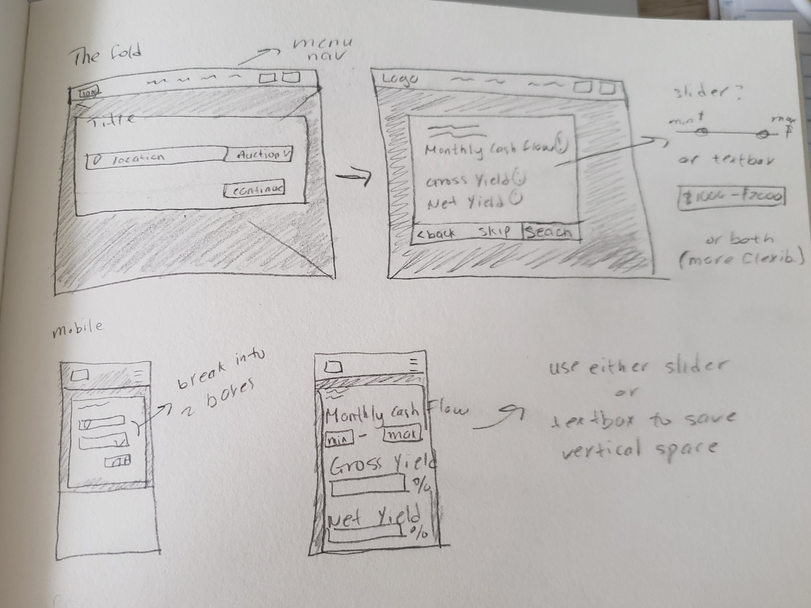
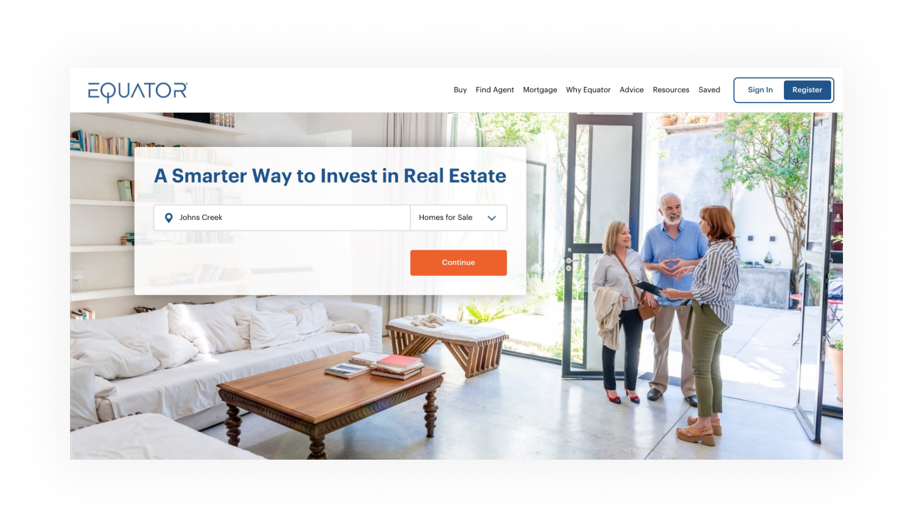
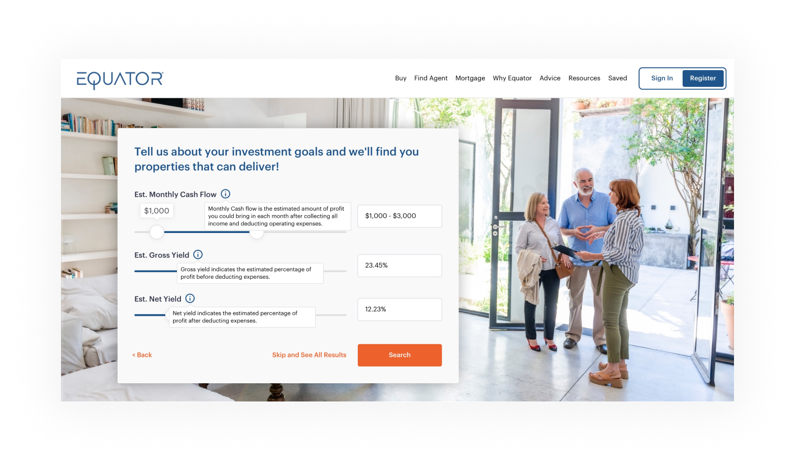

Equator Home Page Redesign
During my time at Altisource, I was assigned as the main UX/UI designer for one of our sub-unit called Equator.com. Equator is a property marketing platform that allows investors to find auction, foreclosure, and short sale houses. My responsibility was to redesign and rebrand Equator's home page, search results page, and property details page.
In the fall of 2020, I took the first step and worked with our Design Director and Product team to redesign Equator.com home page to update the website's aesthetic and promote Equator's new feature of return on property investment to better serve our investors.
Research
After setting up meetings with the Design Director and Product Manager, I was able to grasp the scope of the project. Some of my findings are as follows:
- There's currently no filter for investors to narrow down their search based on estimated monthly cash flow, estimated gross yield, and estimated net yield
- There's no established style guide, thus, creating a lot of consistency issues
- Since we won't have participants for user testings, I'll have to rely on past data from older projects, feedback, and user behavior analysts from the CRM team
PROBLEMS
- Create a filter feature for investors to narrow their search results
- Create a style guide for consistency, but must keep the main blue color. Having an established style guide will make the design process easier, more consistent, and less time consuming in the next phases.
SOLUTIONS
- Must have an investment filter in the property search process
- Must use the blue color as the main brand color
- Must keep the existing contents, but can be rearranged and add creativity to it
REQUIREMENTS
- Due to the pandemic, we'll have no budget or participants for user testings
CONSTRAINTS
Ideation
Since most of the home page requires more of an aesthetic redesign, I decided to focus on tackling the investment filter. The team wants to present the filter feature within the fold. I experimented with different ideas, prioritizing ideas that are more mobile-friendly.
Design
After the ideation process, I moved on to creating a global design system, which keeps the current main blue color but implemented clean lines, light shadows, and a secondary color that highlights primary CTA buttons. I aimed to keep the design language consistent throughout the website. I also created icon and illustration sets that feature slightly rounded corners. Having an established style guide will make the design process easier, more consistent, and less time consuming in the next phases.
Under the fold, I included a recommended listings section to boost investor's interest in browsing our inventory follows by an introductory/benefits section to prove how Equator can add value to our investor's journey. The rest of the contents were designed in a more exciting way to browse different services and a better way to display blog posts.
 